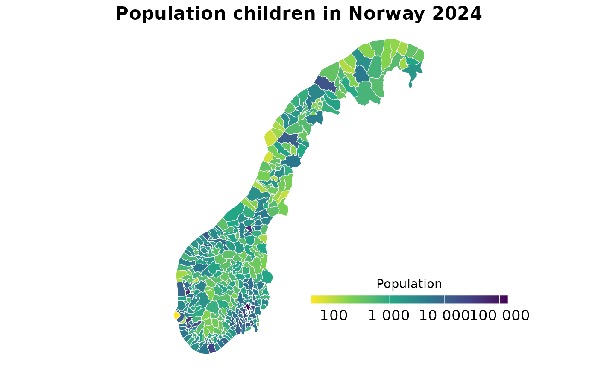

Plot spatial data
Usage
plot_map(
data,
level = c("kommune", "fylke"),
rate_col,
region_number_col,
legend_title = "",
map_title = "",
percent = FALSE,
auto_transform = FALSE
)Arguments
- data
A data frame with the prevalence/incidence rates and auxiliary information.
- level
A character string. Type geographical level, can be "kommune" or "fylke".
Kommune 2025 geojson file retrieved from https://kartkatalog.geonorge.no/metadata/administrative-enheter-kommuner/041f1e6e-bdbc-4091-b48f-8a5990f3cc5b
Fylke 2024 geojson file retrieved from https://kartkatalog.geonorge.no/metadata/administrative-enheter-fylker/6093c8a8-fa80-11e6-bc64-92361f002671
- rate_col
A character string. Name of the column in
datacontaining the information (e.g. rates) to map.- region_number_col
A character string. Name of the column in
datacontaining fylke or kommune identification numbers in 2024 standard (harmonized series). For more information please consult the vignette("other_useful_fun")- legend_title
A character string. Title for the legend box.
- map_title
Character string. Title of the plot.
- percent
Logical. Do the numbers in rate_col represent proportions or percentages? If
TRUEformats scale as percentage. Default isFALSE.- auto_transform
Logical. Sometimes if your data is skewed, the color palette and scale in the map might not look right. If
TRUE, applies log10 transformation. Default isFALSE.
Examples
pop_kommuner_2024 <- get_population_ssb(
regions = "kommuner",
years = 2024,
ages = c(0:18),
aggregate_age = TRUE,
by_sex = FALSE)
#> ℹ Retrieving population of kommuner for the years: 2024, and ages: 0,1,2,3,4,5,6,7,8,9,10,11,12,13,14,15,16,17,18
#> ℹ Aggregating ages...
#> ✔ Population dataset ready!
pop_kommuner_2024 <- harmonize_municipality_codes(
data = pop_kommuner_2024,
municipality_col = "region_code") |>
dplyr::filter(age == "Total")
#> ! NAs in municipality code column in pop_kommuner_2024: 0
#> ────────────────────────────────────────────────────────────────────────────────
#> ✔ Successfully matched old municipality codes with harmonized municipality codes
#> ℹ Total matched rows: 7140
plot_map(pop_kommuner_2024,
level = "kommune",
rate_col = "population",
map_title = "Population children in Norway 2024",
legend_title = "Population",
region_number_col = "harmonized_code",
auto_transform = TRUE)
#> ! Skewed data, applying log10 transformation for better visualization.
